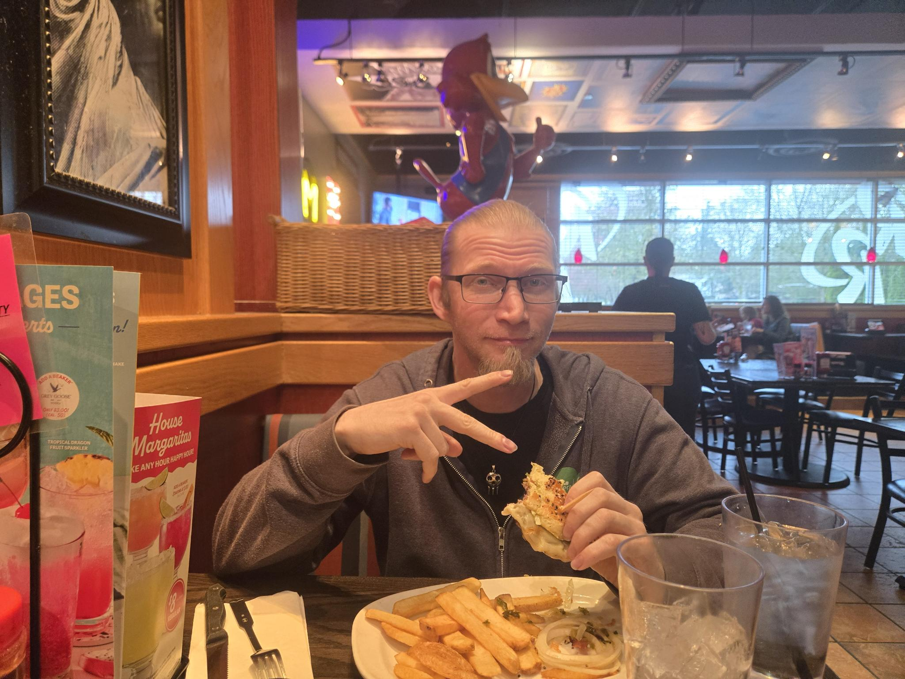

If you made it to this page, congratulations — you’ve unlocked the extended Jeff content.
Page one gives the quick overview. This page is the deeper dive into how I think, what I value, what makes me tick, and how the Jeff operating system generally works.
If you’re curious about who I am beyond the quick stats, you’re in the right place.
Early Life
Spawned into the world with a curious brain and a built-in need to ask, “How does that work?” about basically everything.
Learning Years
A long stretch of figuring out people, life, and how to navigate the world without spontaneously combusting.
Tech Discovery
At some point it became very clear that solving tech problems and helping people fix things was not only useful, but actually fun.
IT Career Arc
Years of learning systems, solving problems, and helping people who just want their computers to cooperate for five minutes.
The New Jeff Era
After the end of a 16-year relationship that shaped a huge part of my life, I entered what I call the New Jeff Era. This chapter is about rebuilding, rediscovering who I am as an individual, trying new things, and building a life that feels exciting and meaningful again.
These are the movies and shows that had the biggest influence on me over the years.
System Message
If you read this far, you now understand the Jeff operating system better than most people do.
Thanks for taking the time to explore the extended version of how my brain, values, and personality work.
Always look for the win.